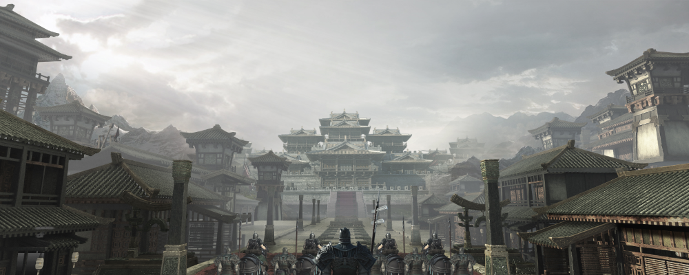
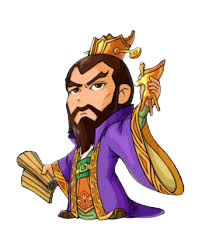

曹營大哉問 題庫區
夏侯惇：
Q：對曹操的評價中流傳最廣的就是「清平之奸賊，亂世之英雄」，
對於曹操的定位極為合理，那麼請問給出曹操這個評價的是誰呢？
夏侯淵：
Q：後世的軍神李靖，評價曹操的「武功」為，「行軍用師，因事設奇
，譎敵制勝，變化如神。自作兵書十萬餘言，諸將征伐，皆以
新書從事，
臨事又手為節度，從令者克捷，違教者負敗。」曹操一生樂於鑽研兵法，
有高深的軍事理論，曾熟讀孫武、吳起等前代
軍事家的著作，在習諸家兵
法的基礎上，結合自己的戰爭經驗加以論述，曹操寫成了一部兵書，這是？
張遼：
Q：對外硬不硬，是檢測一個政權實力的絕佳依據。建安十二年，曹操
為了肅清袁氏殘餘勢力，也為了徹底解決三郡烏桓入塞為害問題，決定遠征
烏桓，最終大勝烏桓。九年後，曹操扣押南匈奴單于，將其終身軟禁並把匈
奴分為五部，派漢人官員任職司馬前去監督。那麼這位被曹操扣押的南匈奴
單于是誰？
張郃：
Q：曹操剛剛步入官場，年紀輕輕的曹操就申明禁令、嚴肅法紀。他遣手下
造五色大棒十餘根，懸於衙門左右，明文規定「有犯禁者，皆棒殺之」。即便是
皇帝寵幸的宦官蹇碩的叔父蹇圖違禁夜行，曹操毫不留情，將蹇圖用五色棒處死。
於是，「京師斂跡，無敢犯者」。那麼，曹操剛剛步入官場，初步顯示自己才能
的官職是？
典韋：
Q：曹操入朝為官後，看到了董卓的倒行逆施，他不願意與董卓同流合污，然後改
易姓名逃出京師洛陽，接著曹操開始「散家財，合義兵」，號召天下英雄討伐董卓
。那麼，曹操在哪裡完成自己的招兵買馬？
許褚：
Q：曹、袁官渡之戰中，袁紹大將顏良等圍擊白馬，拉開了大戰序幕。而曹操親自率
兵北上，他聽從自己手下一位謀士的意見，先進軍延津
，做出要渡河襲擊袁軍的態勢，
吸引袁軍分兵西向，然後突然轉向迅速趕往白馬。曹操軍突然殺到，袁軍措手不及，顏
良被關羽斬首，袁
軍大敗，白馬之圍遂解。那麼這位獻計解白馬之圍的謀士是誰？
徐晃：
Q：建安十七年，曹操逐馬超、破韓遂、滅宋建、橫掃羌、氐，虎步關右，涼州地區基本
平定。漢獻帝准許曹操「參拜不名、劍履上殿」，
曹操從此位極人臣，榮寵無雙。那麼，「
參拜不名、劍履上殿」是西漢初年一位名臣獨有的特權，他是？
李典：
Q：建安元年，曹操做出了自己爭霸天下的一個重要舉措，就是「屯田」。從此人民歸於土地
，經濟開始恢復發展，當年就大有成效，得
谷百萬斛。於是，接下來曹操就開始在自己的所有勢
力範圍推行屯田制度。那麼，這個制度最開始是誰向曹操提議的？
荀彧：
Q：曹操為何放棄了第一次攻打徐州？
荀攸：
Q：曹操字什麼？
賈詡：
Q：曹操的父親是誰？
程昱：
Q：靈帝駕崩時，曹操官拜？
郭嘉：
Q：曹操向誰借七寶刀去刺殺董卓？
曹丕：
Q：最早預言曹操“將來能安天下”的是誰？
曹彰：
Q：曹操因為作了一個什麼夢而決心不給司馬氏兵權
曹植：
Q：曹操割髮代首片段中 謀士郭嘉引用甚麼文章為曹操開脫踐踏田地的罪責？
曹仁：
Q：典韋是誰介紹給曹操的?
于禁：
Q：曹操說「寧我負人，毋人負我！」是因為他殺了誰?